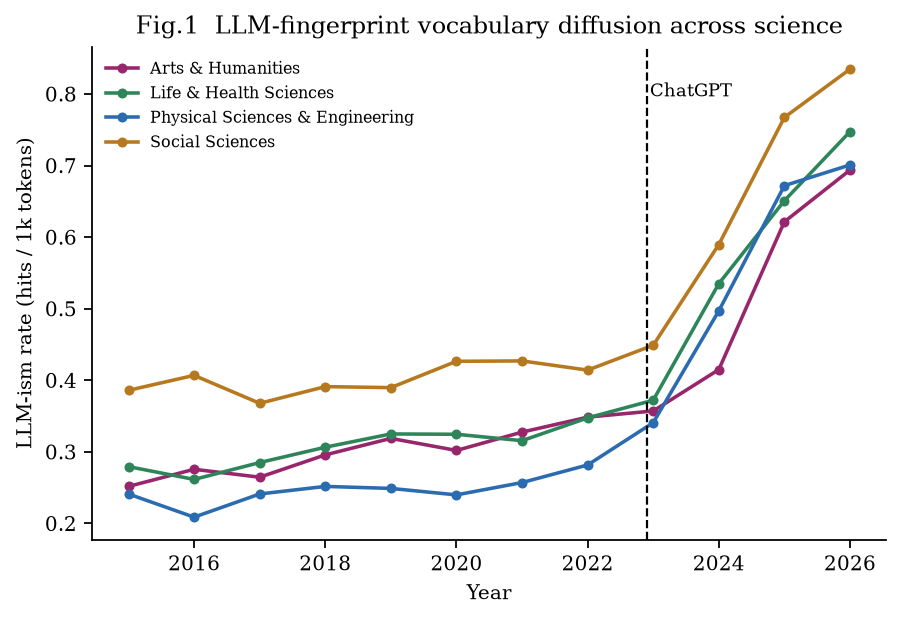
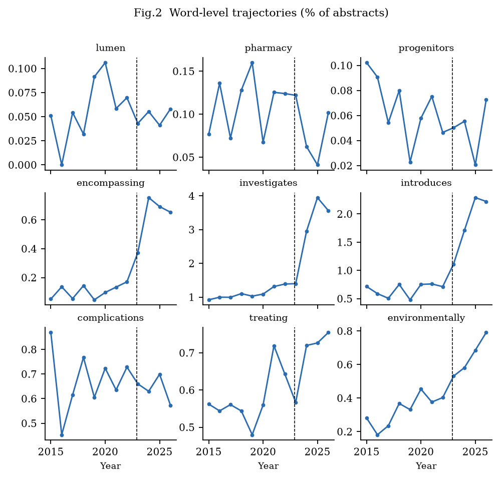
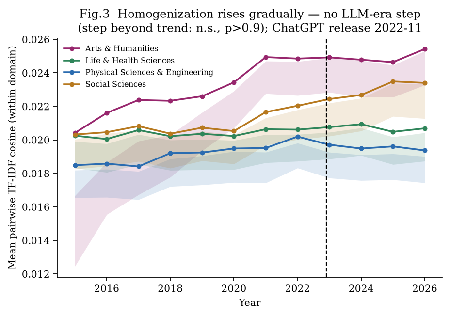
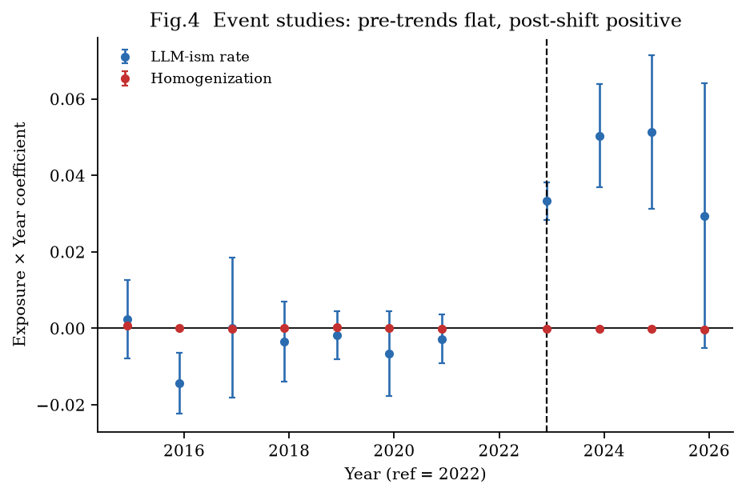
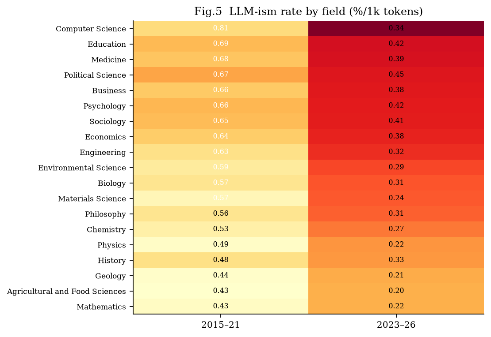
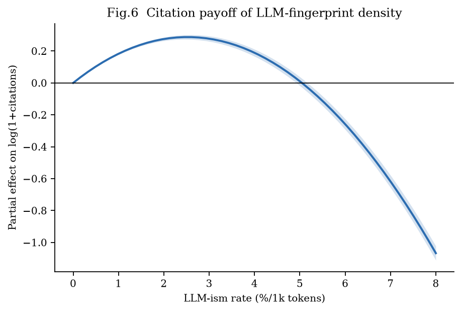
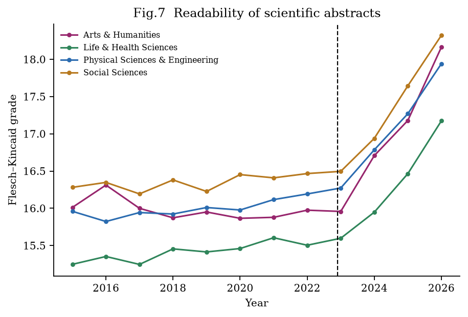
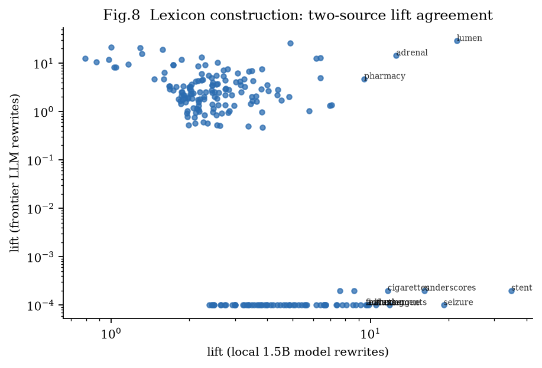
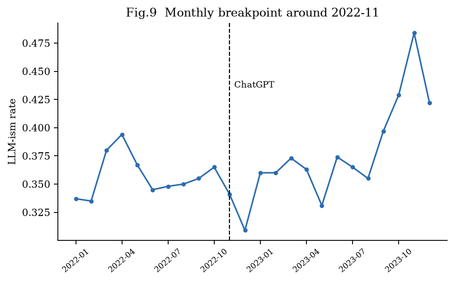

Figures
图集
All nine publication figures, generated by one command (see Reproduce).
九张发表级图，全部由一条命令生成（见"复现"页）。









All nine publication figures, generated by one command (see Reproduce).
九张发表级图，全部由一条命令生成（见"复现"页）。








